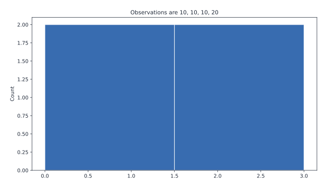

Observations are 10, 10, 10, 20
histogram chart. 4 displayed records from 4 input records. Reduction strategy: none.
View chart data (4 records)
| index | value |
|---|---|
| 0 | 10 |
| 1 | 10 |
| 2 | 10 |
| 3 | 20 |

histogram chart. 4 displayed records from 4 input records. Reduction strategy: none.
| index | value |
|---|---|
| 0 | 10 |
| 1 | 10 |
| 2 | 10 |
| 3 | 20 |